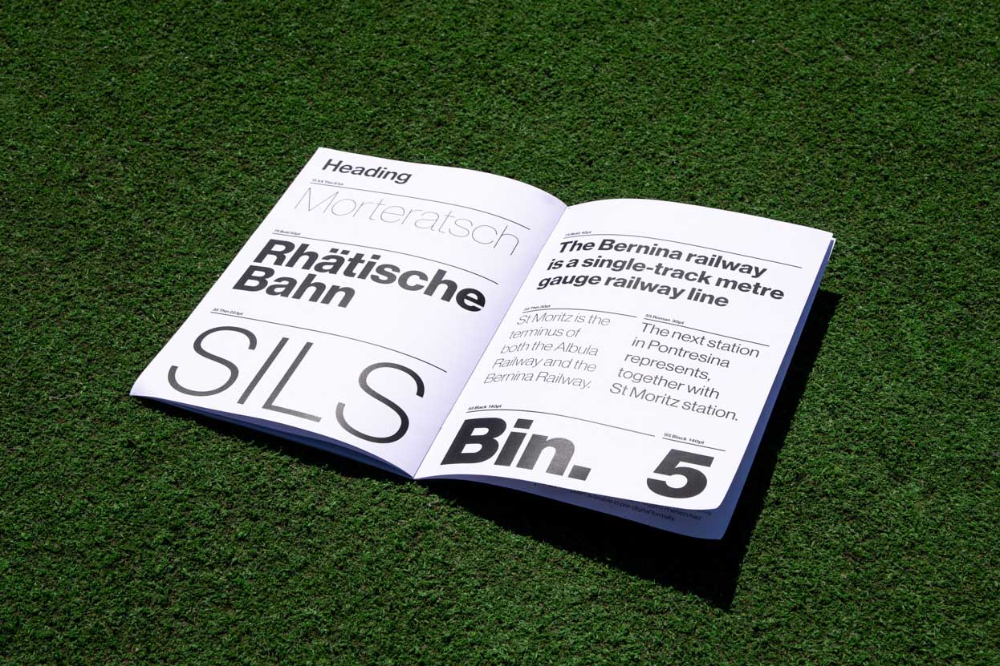
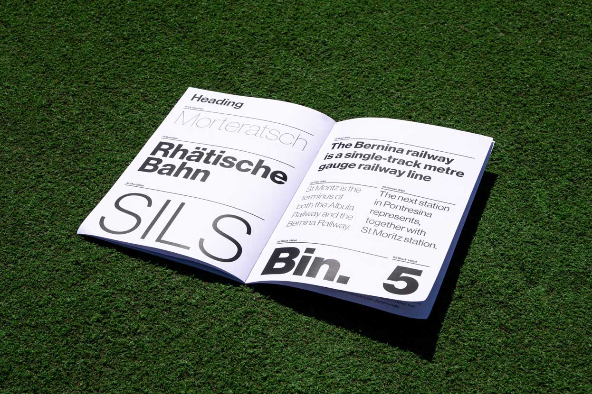
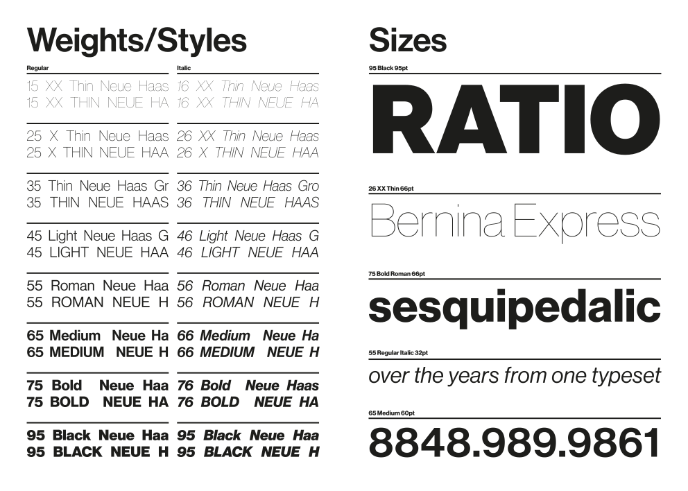
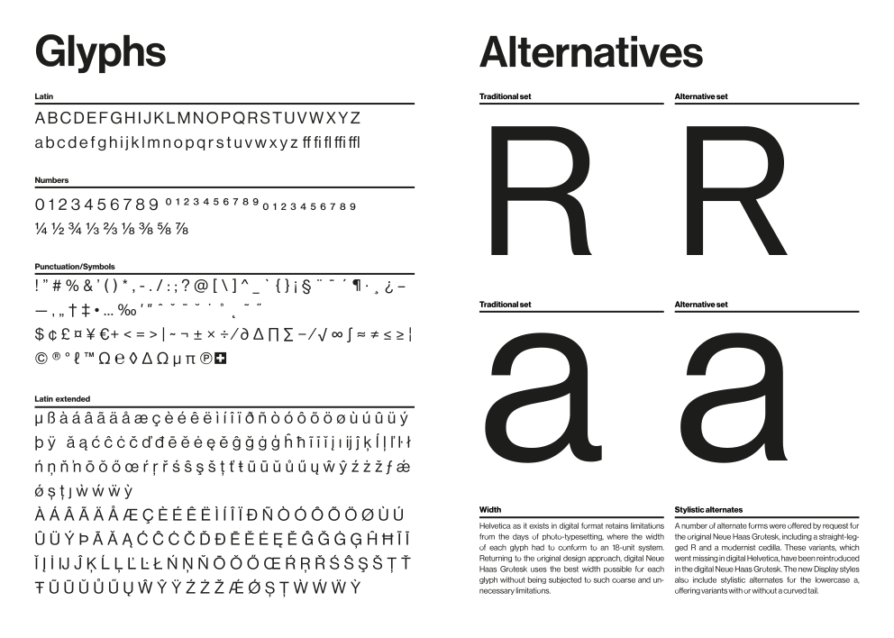
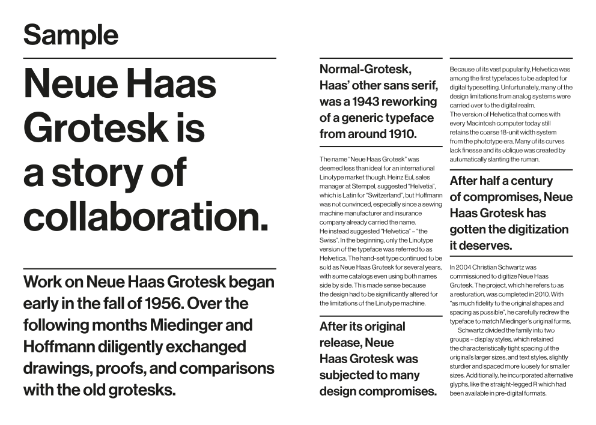
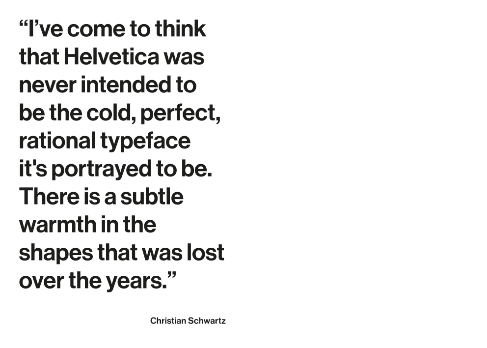
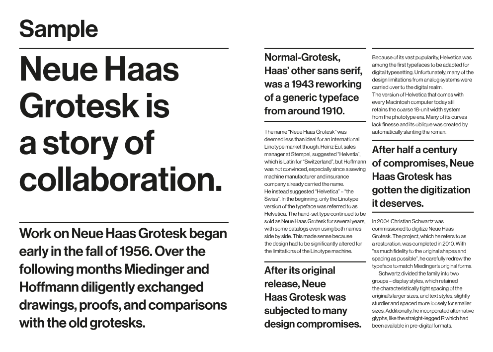
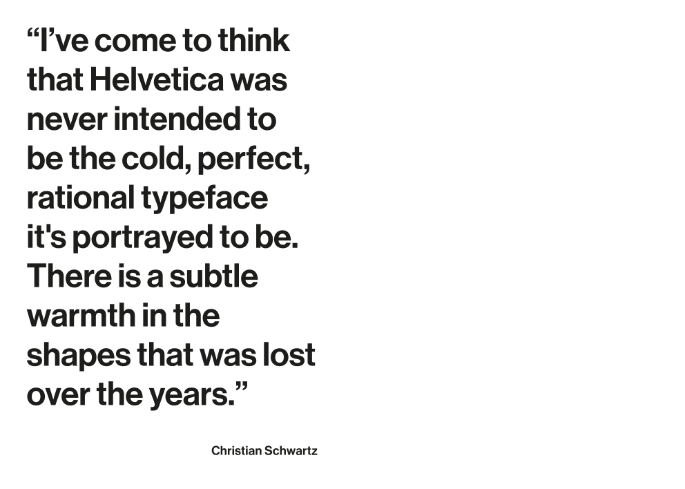
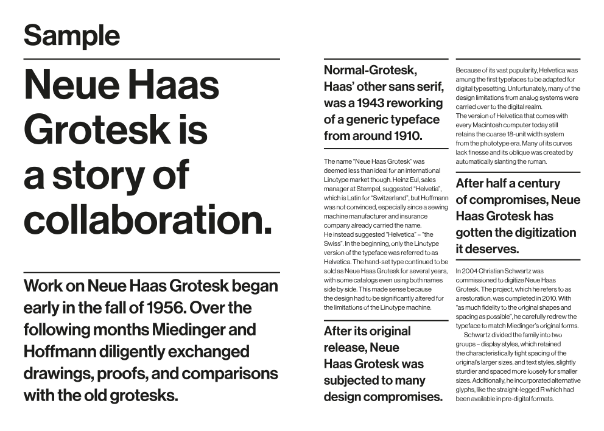
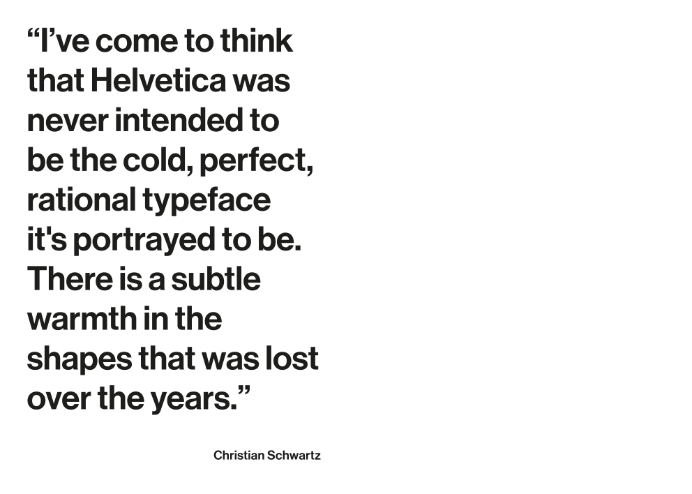

Neue Haas Grotesk - Specimen

The booklet presents the Neue Haas Grotesk character in all its possible variations, underlining its versatility and peculiarities.
Precisely, the objective of the specimen is to present the font for the features that distinguish it from Helvetica, from the aesthetic details to the feature of maintaining a good readability even at very low scales. The typographical samples are accompanied by captions and short
texts describing the history and peculiarities of the font.
Role: TYPOGRAPHY
Typography |
November 2018 |
Academic Project |
17×24 CM / 16 PAGES / STAPLED / DIGITAL PRINT |
 




 




